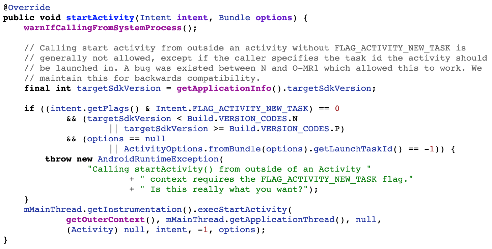
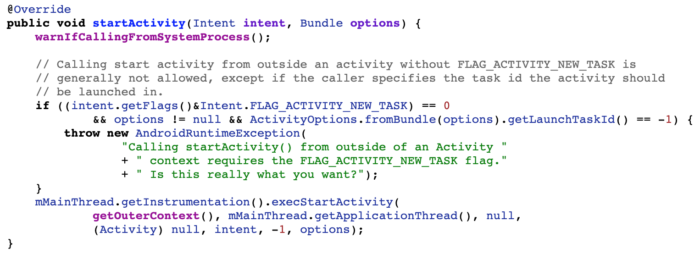
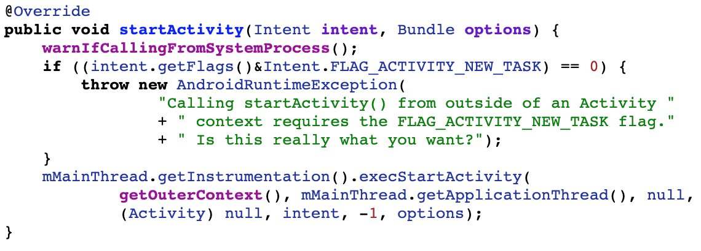

有以下代码，在一个Service中启动Activity，启动Activity必不可少的就是Context对象，Service和Activity都是Context。使用Activity类型的Context是可以启动一个新的Activity的，但使用Service类型的Context启动Activity时，需要在Intent中手动添加一个 FLAG_ACTIVITY_NEW_TASK 才能正确启动Activity。
internal class XxxIntentService : BaseJobIntentService() {
override fun onHandleWork(intent: Intent) {
// getApplicationContext()
goXxxActivity(applicationContext, url)
}
}
// 跳转到某个Activity
fun goXxxActivity(context: Context, url: String) {
val intent = Intent(context, XxxActivity::class.java)
intent.putExtra(XxxActivity.EXTRA_URL, url)
ActivityCompat.startActivity(context, intent, null)
}
运行以上代码，Android O 版本中，能正常跳转到新的Activity，但是在Android P 版本中，系统会抛出异常：
android.util.AndroidRuntimeException: Calling startActivity() from outside of an Activity context requires the FLAG_ACTIVITY_NEW_TASK flag. Is this really what you want?
at android.app.ContextImpl.startActivity(ContextImpl.java:912)
at android.app.ContextImpl.startActivity(ContextImpl.java:888)
at android.content.ContextWrapper.startActivity(ContextWrapper.java:379)
at com.example.test.XxxIntentService$1.onHandleWork(XxxIntentService.java:19)
at android.os.Handler.handleCallback(Handler.java:873)
at android.os.Handler.dispatchMessage(Handler.java:99)
at android.os.Looper.loop(Looper.java:193)
at android.app.ActivityThread.main(ActivityThread.java:6669)
at java.lang.reflect.Method.invoke(Native Method)
at com.android.internal.os.RuntimeInit$MethodAndArgsCaller.run(RuntimeInit.java:493)
at com.android.internal.os.ZygoteInit.main(ZygoteInit.java:858)
Android O 版本上，和文章开头所说的观点不同，即使Intent没有设置FLAG_ACTIVITY_NEW_TASK，新的Activity仍然能被启动起来，但是在Android P 版本中，则和文章开头所说的观点相同。为什么？
1.1. P vs O
既然P版本会报错，O版本不报错，那对比一下P版本和O版本，在启动Activity时，都做了哪些检验。
1.1.1. Android P

在O版本是，抛异常的检验条件是：
(intent.getFlags() & Intent.FLAG_ACTIVITY_NEW_TASK) == 0 &&
(targetSdkVersion < Build.VERSION_CODES.N || targetSdkVersion >= Build.VERSION_CODES.P) &&
(options == null || ActivityOptions.fromBundle(options).getLaunchTaskId() == -1)
从上面的注释可以看出，在N版本到O-MR1版本之间，Android系统源码本身存在一个Bug，导致在Service中，即使没有设置FLAG_ACTIVITY_NEW_TASK，也能启动一个Activity。
http://androidxref.com/9.0.0_r3/xref/frameworks/base/core/java/android/app/ContextImpl.java#886
结合文章开头的Service中启动Activity的代码，我们传的options为空，所以在P版本中，检验条件为true，则会正常抛出异常。
1.1.2. Android N - O

在O版本是，抛异常的检验条件是：
(intent.getFlags() & Intent.FLAG_ACTIVITY_NEW_TASK) == 0 &&
(options != null && ActivityOptions.fromBundle(options).getLaunchTaskId() == -1))
http://androidxref.com/7.0.0_r1/xref/frameworks/base/core/java/android/app/ContextImpl.java#794
结合文章开头的Service中启动Activity的代码，我们传的options为空，所以在O版本中，检验条件为false，自然不会抛出异常。
1.1.3. Android M

在O版本是，抛异常的检验条件是：
(intent.getFlags() & Intent.FLAG_ACTIVITY_NEW_TASK) == 0)
http://androidxref.com/6.0.1_r10/xref/frameworks/base/core/java/android/app/ContextImpl.java#669
结合文章开头的Service中启动Activity的代码，在M及以前的版本，没有设置FLAG_ACTIVITY_NEW_TASK，检验条件为true，会抛出异常。
更多：